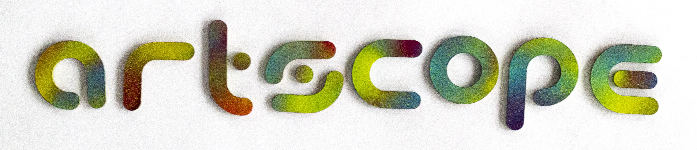

- Artscope Magazine
- Medium: Branding, Publication, Ads, Web
- Paper: Glossy
- Year: 2017—2019
- Format: Variable
As a Junior Designer and Design Intern at Artscope Magazine, I worked to revamp Artscope's brand through much research and iteration. I was responsible for creating a new brand identity guide,
reworking their original logo, updating color palettes, changing both the layout and typographic systems of the print publication and online assets, working with a developer to redesign AS online,
creating print collateral pieces such as postcards, business cards and self ads, redesigning and updating their media kit, creating social posts with imagery, designing multiple centerfold spreads for different issues, and also working with
artists to create 1/8, 1/4, 1/2, full page and full spread issue ads they ran in the AS publication. I experimented with laser cutting and spray paint for different collateral and the AS
t-shirt design.
@artscopemagazine

